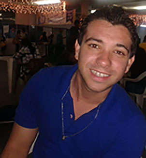

Meu nome é Diego, sou universitário da faculdade FEUC. Faço faculdade de sistema de informação, estou cursando o 7 Periodo. Adoro trabalhar com grandes linguagem de programação como Python, Java, html5, css, postgres. Adorei fazer um projeto simples com a linguagem python, um simples robô caseiro dentro da UFRJ.

Diego Bizerra
Sou universitario da faculdade feuc
Vice Campeão de programação
Também disputei na minha faculdade maratona de programação em grupo.
E conseguir dois anos executivo fica em 2 lugar.